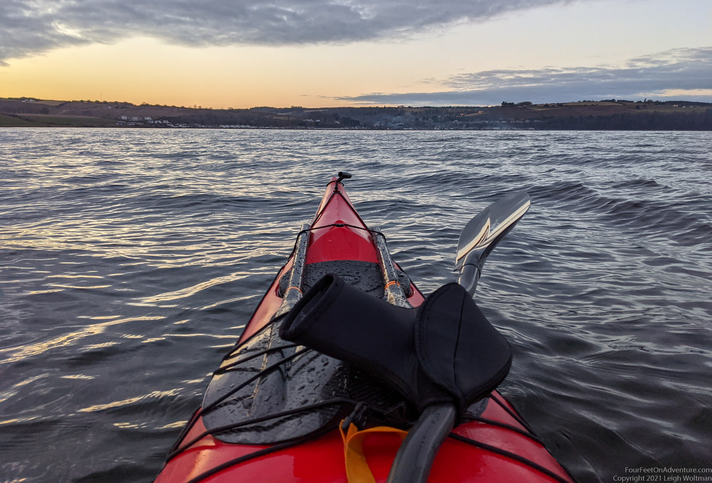
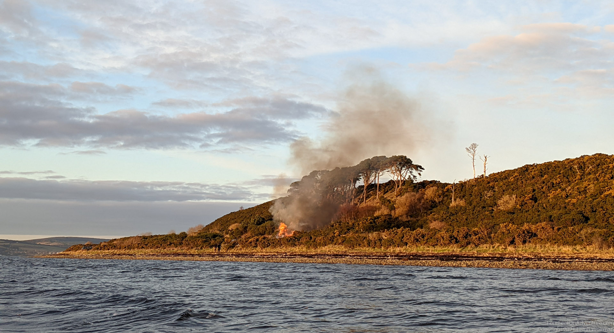
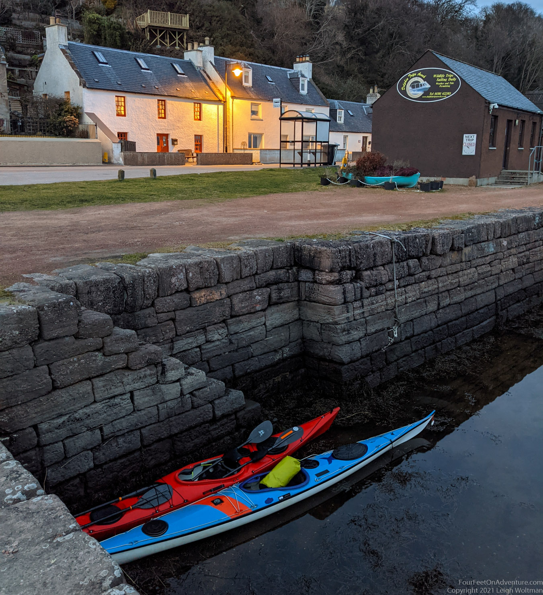
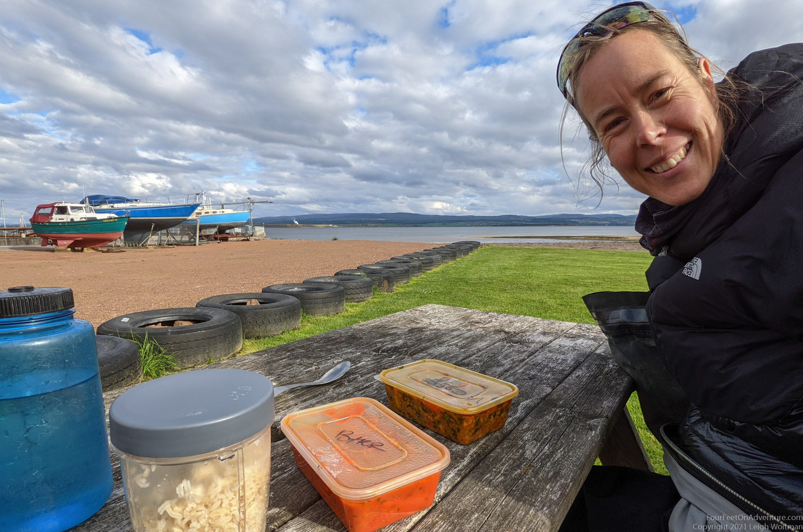

It’s Friday and approaching time to stop working. We’re both not feeling like cooking after having finished a week of work. Although we are still in a stay-at-home lockdown, take-out places are open. So, we decide to order some Chinese in Avoch. So far nothing too adventurous. However, Avoch is on the other side of the firth. Of course we could drive there, but it’s such a beautiful calm evening. We wouldn’t be us if instead we put on our dry suits, carry the kayaks to the water and start paddling across.

Only 200 meter in our paddle we see some kids dashing away on the beach with smoke behind them. They have put the gorse (bush with yellow flowers) on fire! We call our neighbours because we don’t have the number of the person living closest. They will contact him and also the firemen. We keep going, but look back every now and then, and see more bushes lighting up. Eventually we see the lights of the firemen arriving. It has been so dry and gorse burns so fast. Although it’s a calm night, there is still a bit of a breeze to move the fire from bush to bush.

We make it to the other side of the firth and paddle our boats in the cutest little harbour you’ve ever seen. Somewhat surprisingly we haven’t been here before, though it’s only about an hour and a half paddle across from our house. We are on the Black Isle now, in one of it’s charming little villages.

We meet our friend Karen, who is joining us for dinner on the beach, and walk in our drysuits to the Chinese take out. The sunset is beautiful, and it’s nice to be out. It’s one of those very cold evenings, clear, but a little damp. Probably around freezing considering there is some ice formation on my hatches on the way back. Even though I am wearing my biggest puffy packed, I’m still a little cold. Socially distanced we eat our food and catch up. It became a perfect Friday. Though, I miss the “sambal bai”, the English Chinese are different from Dutch Chinese. I think all this staying at home is getting to me and I'm getting a little home sick for the flat lands...
